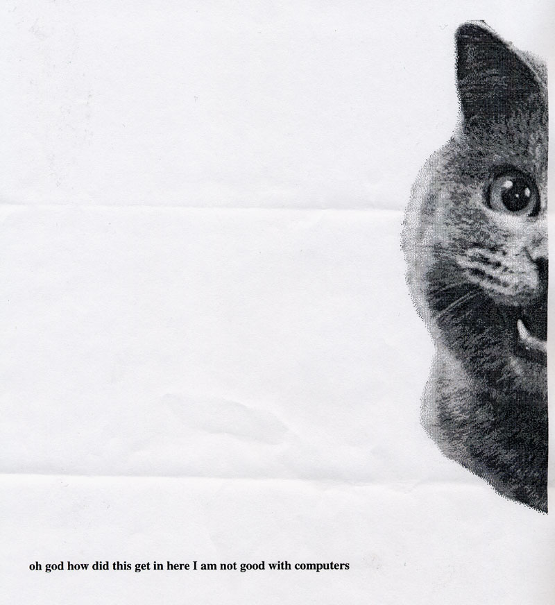
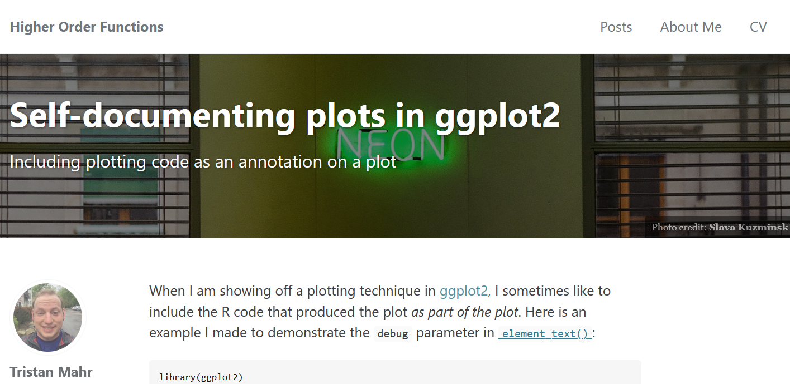
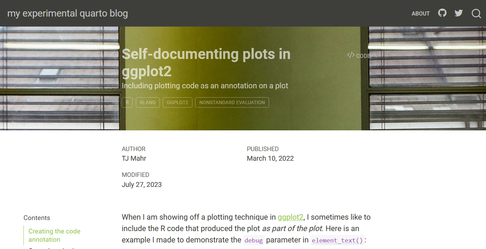
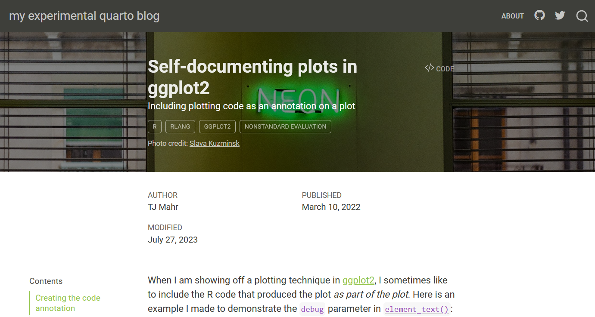

Quarto index.qmd front matter (key portion)
aliases:
- "/self-titled-ggplot2-plots/"TJ Mahr
July 2, 2023
July 28, 2023
This post is a set of notes on how I migrated my blog from Jekyll (a Ruby based blogging system) to Quarto (a Pandoc/RMarkdown-ish based blogging system).

Over the years on the Jekyll site, blogging from 2016 to 2023, I had slowly opted into customizations, tricks and workarounds. I developed my own build pipeline using targets and knitr. Each post included a _footer.Rmd child document that included the session information at the bottom of the post. I could never get downlit source-code linking to work with Jekyll’s syntax highlighting system, so I recreated the effect where I could. R and Windows could gobble up emoji until very recently so I had used emo::ji() and Github :inline_emoji: syntax as a workaround. I sometimes used Jekyll-specific syntax and site-specific theming—a no-go in Quarto-land—and I have to port them over now too. All of these features and customizations become potential liabilities at migration time.
Quarto blogs are a supported project template in RStudio, so to create the blog I went to File > New Project > New Directory > Quarto Blog to get the project infrastructure in place. To preview/build the site, I could click Build > Render Website or Ctrl + Shift + B. Easy peasy.
My Jekyll blog had the following, very simplified, high-level structure.
.
├── 📁 _R
│ ├── 📁 _drafts
│ ├── 📄 2022-03-10-self-titled-ggplot2-plots.Rmd
│ └── [other .Rmd files]
├── 📁 _posts
│ ├── 📄 2022-03-10-self-titled-ggplot2-plots.md
│ └── [other .md files]
├── 📁 _drafts
├── 📁 _site
│ ├── 📁 self-titled-ggplot2-plots
│ │ └── 📄 index.html
│ ├── [other directories for each post]
| └── 📄 index.html
└── 📁 assets
| ├── 📁 css
| ├── 📁 images
| | ├── 🌅 2022-03-neon.jpg
| | └── [other images for each post]
| └── 📁 js
└── 📄 _targets.RWhere the workflow is:
_R folder._targets.R) check the .Rmd files for changes and run knitr on any that have changed, creating the .md file in the _posts folder. (targets also spell-checks all of the files on each run.)_site folder and serve the _site folder to visitors.If I want to include any non-figure images, I have to store them in assets/images. If want to develop a draft, I have to keep it in a separate workflow. (If an .md file ends up in _posts, it is published.) Finally, the date in the filename is significant. It sets the “date published” for the post, and the date is later stripped off for the final address of the post in the published site.
Here is the parallel set up in my Quarto site:
.
├── 📁 posts
│ ├── 📁 2022-03-10-self-titled-ggplot2-plots
│ | ├── 🌅 2022-03-neon.jpg
│ | └── 📄 index.qmd
│ ├── [other directories for each post]
│ └── 📄 _metadata.yml
├── 📁 docs
│ ├── 📁 posts
| │ ├── 📁 2022-03-10-self-titled-ggplot2-plots
| │ | ├── 🌅 2022-03-neon.jpg
| │ | └── 📄 index.html
| | └── [other directories for each post]
│ └── 📄 index.html
└── 📄 _quarto.ymlHere, Quarto runs the .qmd -> .md -> .html pipeline, and the docs folder is published as-is as the website on GitHub.
Look at how much simpler this is layout is. Notably:
_drafts folder business is gone, because we use document metadata data (set draft: true in the YAML header) to indicate draft status.Here, the date in the filename is not significant to Quarto; it helps me out because I want my posts to be sorted in chronological order by date published. In order to set the date for a post, I have to set date: "2023-07-03" in the document’s YAML header.
The addresses created by Jekyll did not include the date: self-titled-ggplot2-plots/index.html. But in Quarto, the folder name carries over to the site: posts/2022-03-10-self-titled-ggplot2-plots/index.html. I am not sure how to get Quarto to automatically change output folder names, and this sucks because any pre-existing links to my posts now point to broken URLS.
Fortunately, document metadata can help us here by letting us create an alias for the post:
Quarto will create a simple page at /self-titled-ggplot2-plots/index.html that will redirect to the proper URL.
To migrate a single post, we need to do the following steps:
_R/[post-date-and-filename].Rmd and save it to posts/[post-date-and-filename]/index.qmd.posts/[post-date-and-filename] and update the locations in the .qmd file accordingly.For things like steps 1–3, I was able to write R functions to handle this migration. For things like 4, I wrote an R function to run a series of checks on a file for potential issues.
Here is an example of the functions running on two posts.
source("import-posts.R")
base_url <- "https://raw.githubusercontent.com/tjmahr/tjmahr.github.io/20e6ab146716425f485ca4f0c81f18aaccebb10f"
post_dir <- "_demo/posts"
data_post <- import_jekyll_post(
target_post = "_R/2022-03-10-self-titled-ggplot2-plots.Rmd",
base_url = base_url,
post_dir = post_dir
)
#> ✔ Post folder created '_demo/posts/2022-03-10-self-titled-ggplot2-plots'
#> ✔ Migrated `2022-03-neon.jpg`
#> ✔ Post file created '_demo/posts/2022-03-10-self-titled-ggplot2-plots/index.qmd'
data_post$lines_current |>
check_post()
#> Warning: Manually linked code found:
#> [71] [`element_text()`](`r a_element_text`):
#> [115] [`wrap_elements()`](`r a_wrap_elements`) to c
#> [157] [`parse()`](`r a_parse`) and evaluate
#> [158] [`eval()`](`r a_eval`):
#> [176] First, we are going to use [`rlang::expr()`](`r a_expr`) to
#> [244] make is using [`rlang::enexpr()`](`r a_enexpr`) ins
data_post <- import_jekyll_post(
target_post = "_R/2023-07-03-bayesian-ordering-constraint.Rmd",
base_url = base_url,
post_dir = post_dir
)
#> ✔ Post folder created '_demo/posts/2023-07-03-bayesian-ordering-constraint'
#> ✔ Migrated `2023-07-ruins-1280.jpg`
#> ✔ Migrated `2023-07-bayes-sign.jpeg`
#> ✔ Post file created '_demo/posts/2023-07-03-bayesian-ordering-constraint/index.qmd'
data_post$lines_current |>
check_post()
#> Warning: Jekyll macro syntax found:
#> [289] {% include figure image_path="20
#> Warning: Manually linked code found:
#> [88] Use brms's monotonic effect [`mo()`][brms-mo] syntax.
#> [200] [`contrast()`](https://rdrr.io/r/stats/c
#> [519] [`matlib::Ginv()`](https://cran.r-projThe check_post() function runs over a file and looks for the lines of text with the following issues:
assets/
At the end of each post on the Jekyll site, I included a footer with
We can get (1) for free by using inline R code in the YAML front matter on each post:
We can also get (2) for free by using more YAML features. First, we tell Quarto the URL for the GitHub repo:
Then enable links to the source code on all the posts. I probably could have included this setting _quarto.yml but I didn’t want to deal with the link being enabled unintentionally if I create any non-blogpost documents.
As for (3), I had implemented this featured originally in a pretty unsophisticated manner: A file called _R/_footer.Rmd generated the post footer, and I included it as a child document in knitr at the bottom of every post.
```{r, include = FALSE}
.parent_doc <- knitr::current_input()
```
```{r, child = "_R/_footer.Rmd"}
```We are going to do the same thing, but using Quarto. The bottom of each post now includes an include shortcode:
{{< include ../_footer.Rmd >}}File-paths in a blog post are relative to the index.qmd file—which is nice for things like datasets or image assets—so to go up to the parent directory for _footer.Rmd, we use ../.
On the Jekyll site, I could include a banner image, a caption for the banner image, and a color overlay for the image using YAML metadata:
Here is the result:

The post featured here is about ggplot2 plots that contain their own source code in the title, so the background image of a neon sign of the word “neon” is a thematic gag.
We can get a banner image in Quarto using the YAML front matter:
where image set the image that accompanies the post on the list of blog posts.
Here is the result:

Note that we cannot see the word “neon” and the title is hard to read without the overlaid color on the image. We can fix these issues by using CSS to create a color background that blends with the image and centering the background image. I also set the font-color to be white for added contrast. In Jekyll, we could customize the color layer for each post, but we do not have that ability here. We store this custom css in title-block.css and tell _quarto.yaml about it.
We still have a major problem at this point: We cannot use these banner images without including the photo credit credit. Fortunately, we can patch this title banner by using a template partial. Quarto documents like these blog posts are built by plugging data into an HTML template, and this template is itself templated (these subtemplates are the partials). That means, we can change just the title banner template and keep the other parts in tact.
First, let’s make the photo caption into a structured piece of metadata in the YAML front matter. This step will create pieces of data the template can see:
We download the HTML title banner template from GitHub and store it in partials/title-block.html. We then modify the file, adding the unindented lines towards the bottom.
partials/title-block.html
<header id="title-block-header" class="quarto-title-block default$if(quarto-template-params.banner-header-class)$ $quarto-template-params.banner-header-class$$endif$">
<div class="quarto-title-banner">
<div class="quarto-title column-body">
<h1 class="title">$title$</h1>
$if(subtitle)$
<p class="subtitle lead">$subtitle$</p>
$endif$
$if(description)$
<div>
<div class="description">
$description$
</div>
</div>
$endif$
$if(categories)$
$if(quarto-template-params.title-block-categories)$
<div class="quarto-categories">
$for(categories)$
<div class="quarto-category">$categories$</div>
$endfor$
</div>
$endif$
$endif$
</div>
<!-- 🆕 start -->
$if(title-block-banner-caption)$
<div class = "title-block-caption">
Photo credit: <a href="$title-block-banner-caption.link$">$title-block-banner-caption.credit$</a>
</div>
$endif$
<!-- 🆕 end -->
</div>
$title-metadata.html()$
</header>In Pandoc’s templating language, we can refer to YAML front matter variables by using dollar signs. For example, $title$ inserts the title, and $title-block-banner-caption.link$ inserts the link property of the title-block-banner-caption property. In the added lines, we check for a title-block-banner-caption and then add a <div> with a link to the photo source.
To activate this partial template, we have to add a field to _quarto.yml:
We need this addition to the title block to look okay, so we amend title-block.css:
title-block.css
.quarto-title-block .quarto-title-banner {
background-position-x: 50%;
background-position-y: 50%;
background-blend-mode: overlay;
background-color: rgba(10, 10, 10, .5);
color: rgb(255, 255, 255);
}
.quarto-title-block .quarto-title-banner .title-block-caption {
font-size: .75em;
color: rgba(255,255,255,.7);
}
.quarto-title-block .quarto-title-banner .title-block-caption a {
text-decoration: underline !important;
color: rgba(255,255,255,.7);
}At last, we have a decent looking title banner with a background image and a photo credit.

tktktk
My favorite feature of the Quarto style is the downlit links, where R code is automatically linked to documentation. This piece of code stats::lm() is linked, and I didn’t have to do anything! In my old blog, I would replicate this style by manually adding links or using downlit::autolink() to create links for me. But the links added by downlit and those done by hand have a differently style in the rendered document:
stats::lm() linked by downlitstats::lm() linked manuallyThis link inconsistency is annoying, so it became one of my automatic checks.
When I was working on this post, I couldn’t get the above demonstration to work. downlit appeared not to process the file unless the file had an explicit R code block in it which was mystifying!
By default, the downlit links are not underlined, so I created a file called downlit-underline.css and added it to _quarto.yml. This css is something I had copy-pasted for use in my rmarkdown notebooks, and I have forgetten where I originally found it. I have included it as a comment.
I want a banner image on top like the old site with a credit to the source.
I had to put fig-width: 8 under format > html in _quarto.yml. I also pushed other knitr options here:
fig-asp: 0.618
fig-dpi: 300
fig-align: "center"
fig-cap-location: "margin"out.width knitr option.aliases: [""] in header.I got to opt into fig-cap-location: "margin".
I had to remove the old knitr _cached stuff. Still need a different solution.
I don’t want the green links. If I set the link color, that still leaves the green link color in the table of contents.
I want a slightly larger font size. Set fontsize: 1.1em in _quarto.yml
All of my old manual downlit attempts are styled differently than actual downlit urls. Added a check.
I want underlined downlit links. Done by adding a new css file.
I have to convert fig.alt and fig.cap to here.
#| fig-alt: "Examples of `plot_dist()`"
#| fig-cap:This is the not first post in a Quarto blog. Welcome! It’s configuration. Lots of configuration.
─ Session info ───────────────────────────────────────────────────────────────
setting value
version R version 4.3.0 (2023-04-21 ucrt)
os Windows 11 x64 (build 22621)
system x86_64, mingw32
ui RTerm
language (EN)
collate English_United States.utf8
ctype English_United States.utf8
tz America/Chicago
date 2023-07-28
pandoc 3.1.1 @ C:/Program Files/RStudio/resources/app/bin/quarto/bin/tools/ (via rmarkdown)
quarto 1.3.353
─ Packages ───────────────────────────────────────────────────────────────────
package * version date (UTC) lib source
brio 1.1.3 2021-11-30 [1] CRAN (R 4.3.0)
cli 3.6.1 2023-03-23 [1] CRAN (R 4.3.0)
curl 5.0.1 2023-06-07 [1] CRAN (R 4.3.0)
digest 0.6.33 2023-07-07 [1] CRAN (R 4.3.1)
evaluate 0.21 2023-05-05 [1] CRAN (R 4.3.0)
fansi 1.0.4 2023-01-22 [1] CRAN (R 4.3.0)
fastmap 1.1.1 2023-02-24 [1] CRAN (R 4.3.0)
fs 1.6.3 2023-07-20 [1] CRAN (R 4.3.1)
glue 1.6.2 2022-02-24 [1] CRAN (R 4.3.0)
htmltools 0.5.5 2023-03-23 [1] CRAN (R 4.3.0)
htmlwidgets 1.6.2 2023-03-17 [1] CRAN (R 4.3.0)
jsonlite 1.8.7 2023-06-29 [1] CRAN (R 4.3.1)
knitr 1.43 2023-05-25 [1] CRAN (R 4.3.0)
lifecycle 1.0.3 2022-10-07 [1] CRAN (R 4.3.0)
magrittr 2.0.3 2022-03-30 [1] CRAN (R 4.3.0)
pillar 1.9.0 2023-03-22 [1] CRAN (R 4.3.0)
pkgconfig 2.0.3 2019-09-22 [1] CRAN (R 4.3.0)
ragg 1.2.5 2023-01-12 [1] CRAN (R 4.3.0)
rlang 1.1.1 2023-04-28 [1] CRAN (R 4.3.0)
rmarkdown 2.23 2023-07-01 [1] CRAN (R 4.3.0)
rstudioapi 0.15.0 2023-07-07 [1] CRAN (R 4.3.1)
sessioninfo 1.2.2 2021-12-06 [1] CRAN (R 4.3.0)
stringi 1.7.12 2023-01-11 [1] CRAN (R 4.3.0)
stringr 1.5.0 2022-12-02 [1] CRAN (R 4.3.0)
systemfonts 1.0.4 2022-02-11 [1] CRAN (R 4.3.0)
textshaping 0.3.6 2021-10-13 [1] CRAN (R 4.3.0)
tibble 3.2.1 2023-03-20 [1] CRAN (R 4.3.0)
utf8 1.2.3 2023-01-31 [1] CRAN (R 4.3.0)
vctrs 0.6.3 2023-06-14 [1] CRAN (R 4.3.1)
xfun 0.39 2023-04-20 [1] CRAN (R 4.3.0)
yaml 2.3.7 2023-01-23 [1] CRAN (R 4.3.0)
[1] C:/Users/Tristan/AppData/Local/R/win-library/4.3
[2] C:/Program Files/R/R-4.3.0/library
──────────────────────────────────────────────────────────────────────────────